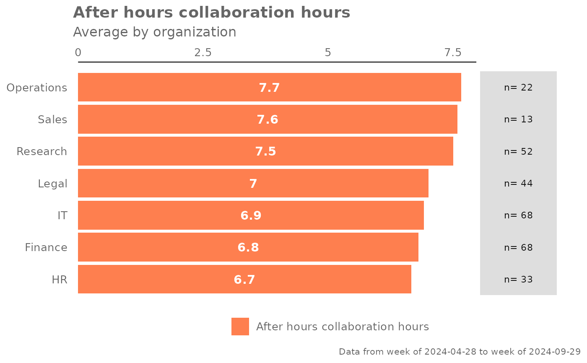
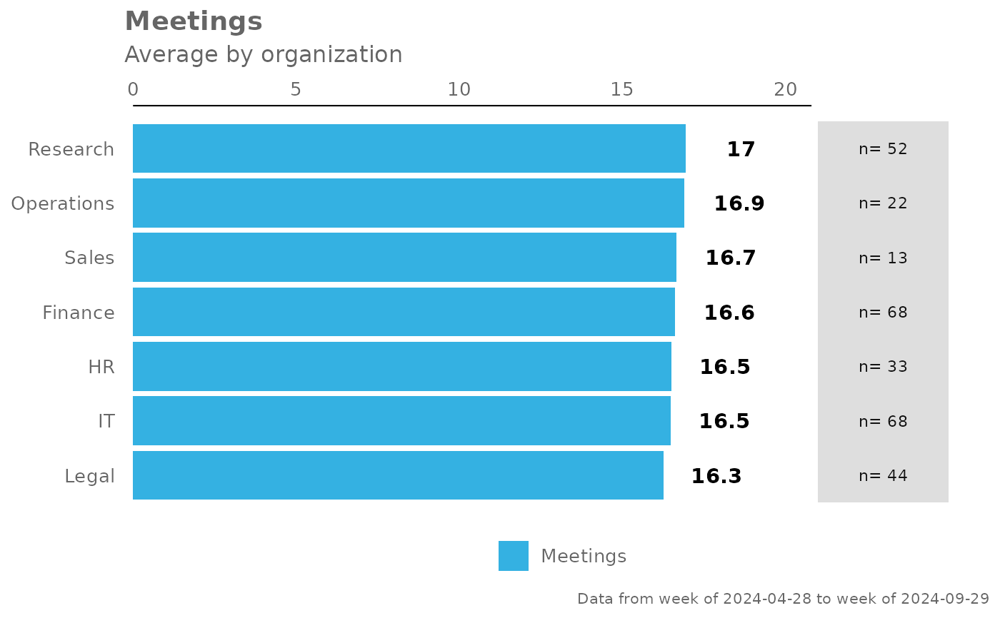
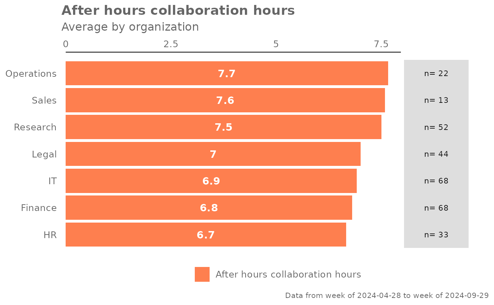
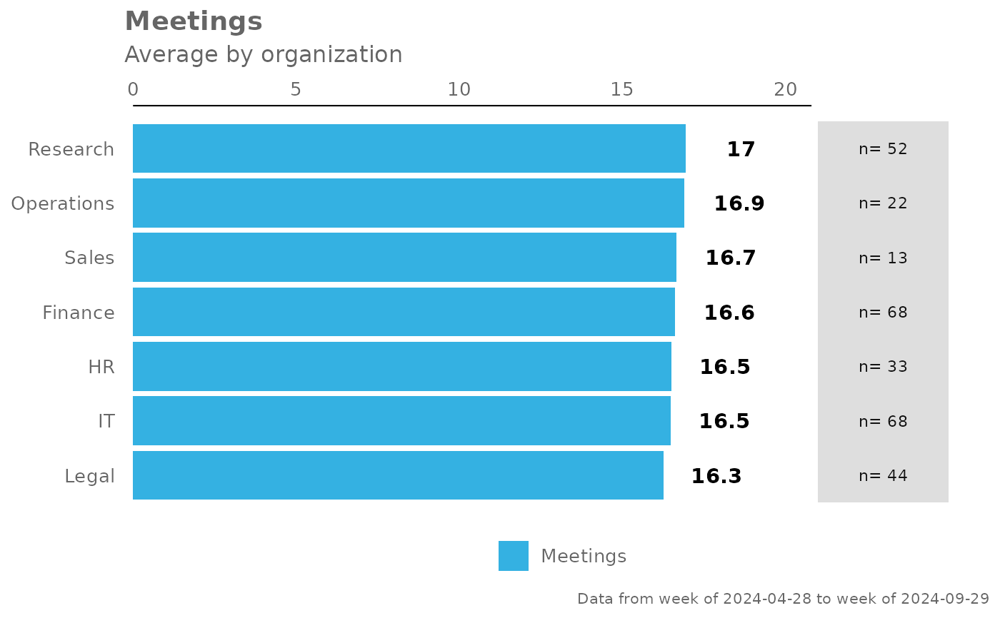

Provides an overview analysis of a selected metric by calculating a mean per metric. Returns a bar plot showing the average of a selected metric by default. Additional options available to return a summary table.
Usage
create_bar(
data,
metric,
hrvar = "Organization",
mingroup = 5,
return = "plot",
bar_colour = "default",
na.rm = FALSE,
percent = FALSE,
plot_title = us_to_space(metric),
plot_subtitle = paste("Average by", tolower(camel_clean(hrvar))),
legend_lab = NULL,
rank = "descending",
xlim = NULL,
text_just = 0.5,
text_colour = "#FFFFFF"
)Arguments
- data
A Standard Person Query dataset in the form of a data frame.
- metric
Character string containing the name of the metric, e.g. "Collaboration_hours"
- hrvar
String containing the name of the HR Variable by which to split metrics. Defaults to
"Organization". To run the analysis on the total instead of splitting by an HR attribute, supplyNULL(without quotes).- mingroup
Numeric value setting the privacy threshold / minimum group size. Defaults to 5.
- return
String specifying what to return. This must be one of the following strings:
"plot""table"
See
Valuefor more information.- bar_colour
String to specify colour to use for bars. In-built accepted values include
"default"(default),"alert"(red), and"darkblue". Otherwise, hex codes are also accepted. You can also supply RGB values viargb2hex().- na.rm
A logical value indicating whether
NAshould be stripped before the computation proceeds. Defaults toFALSE.- percent
Logical value to determine whether to show labels as percentage signs. Defaults to
FALSE.- plot_title
An option to override plot title.
- plot_subtitle
An option to override plot subtitle.
- legend_lab
String. Option to override legend title/label. Defaults to
NULL, where the metric name will be populated instead.- rank
String specifying how to rank the bars. Valid inputs are:
"descending"- ranked highest to lowest from top to bottom (default)."ascending"- ranked lowest to highest from top to bottom.NULL- uses the original levels of the HR attribute.
- xlim
An option to set max value in x axis.
- text_just
![[Experimental]](figures/lifecycle-experimental.svg) A numeric value
controlling for the horizontal position of the text labels. Defaults to
0.5.
A numeric value
controlling for the horizontal position of the text labels. Defaults to
0.5.- text_colour
- String to specify
colour to use for the text labels. Defaults to
"#FFFFFF".
Value
A different output is returned depending on the value passed to the return argument:
"plot": 'ggplot' object. A bar plot for the metric."table": data frame. A summary table for the metric.
See also
Other Visualization:
afterhours_dist(),
afterhours_fizz(),
afterhours_line(),
afterhours_rank(),
afterhours_summary(),
afterhours_trend(),
collaboration_area(),
collaboration_dist(),
collaboration_fizz(),
collaboration_line(),
collaboration_rank(),
collaboration_sum(),
collaboration_trend(),
create_bar_asis(),
create_boxplot(),
create_bubble(),
create_dist(),
create_fizz(),
create_inc(),
create_line(),
create_line_asis(),
create_period_scatter(),
create_rank(),
create_sankey(),
create_scatter(),
create_stacked(),
create_tracking(),
create_trend(),
email_dist(),
email_fizz(),
email_line(),
email_rank(),
email_summary(),
email_trend(),
external_dist(),
external_fizz(),
external_line(),
external_rank(),
external_sum(),
hr_trend(),
hrvar_count(),
hrvar_trend(),
keymetrics_scan(),
meeting_dist(),
meeting_fizz(),
meeting_line(),
meeting_rank(),
meeting_summary(),
meeting_trend(),
one2one_dist(),
one2one_fizz(),
one2one_freq(),
one2one_line(),
one2one_rank(),
one2one_sum(),
one2one_trend()
Other Flexible:
create_bar_asis(),
create_boxplot(),
create_bubble(),
create_density(),
create_dist(),
create_fizz(),
create_hist(),
create_inc(),
create_line(),
create_line_asis(),
create_period_scatter(),
create_rank(),
create_sankey(),
create_scatter(),
create_stacked(),
create_tracking(),
create_trend()
Examples
# Return a ggplot bar chart
create_bar(pq_data, metric = "Collaboration_hours", hrvar = "LevelDesignation")
 # Change bar colour
create_bar(pq_data,
metric = "After_hours_collaboration_hours",
bar_colour = "alert")

# Custom data label positions and formatting
pq_data %>%
create_bar(
metric = "Meetings",
text_just = 1.1,
text_colour = "black",
xlim = 20)

# Return a summary table
create_bar(pq_data,
metric = "Collaboration_hours",
hrvar = "LevelDesignation",
return = "table")
#> # A tibble: 4 × 3
#> group Collaboration_hours n
#> <chr> <dbl> <int>
#> 1 Executive 23.2 37
#> 2 Junior IC 22.9 136
#> 3 Senior IC 23.1 87
#> 4 Senior Manager 22.8 40
# Change bar colour
create_bar(pq_data,
metric = "After_hours_collaboration_hours",
bar_colour = "alert")

# Custom data label positions and formatting
pq_data %>%
create_bar(
metric = "Meetings",
text_just = 1.1,
text_colour = "black",
xlim = 20)

# Return a summary table
create_bar(pq_data,
metric = "Collaboration_hours",
hrvar = "LevelDesignation",
return = "table")
#> # A tibble: 4 × 3
#> group Collaboration_hours n
#> <chr> <dbl> <int>
#> 1 Executive 23.2 37
#> 2 Junior IC 22.9 136
#> 3 Senior IC 23.1 87
#> 4 Senior Manager 22.8 40